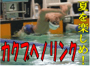
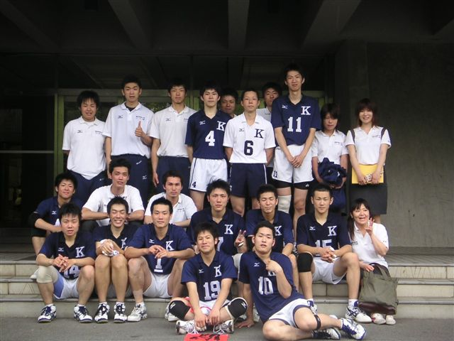

新企画超続々
- お知らせ（４月１８日UP）
- １９５号バックナンバー
- ⇒UP 夏休み企画満 載！！
- ▽広告主募集
- ▽広告主一覧
- ▽定期購読募集
- ▽年間発行予定
- ▽編集部概要（地図）
- ▽サイトマップ
- ▽リンク
- ▽問い合わせ

最近の記事
月別バックナン
バー
- 2007年 12月
- 2007年 11月
- 2007年 10月
- 2007年 09月
- 2007年 08月
- 2007年 07月
- 2007年 06月
- 2007年 05月
- 2007年 04月
- 2007年 03月
- 2007年 02月
- 2007年 01月
- 2006年 12月
- 2006年 11月
- 2006年 10月
- 2006年 09月
- 2006年 08月
- 2006年 07月
- 2006年 06月
- 2006年 05月
- 2006年 04月
- 2006年 03月
- 2006年 02月
- 2006年 01月
- 2005年 12月
- 2005年 11月
- 2005年 10月
- 2005年 09月
- 2005年 08月
- 2005年 07月
- 2005年 06月
- 2005年 05月
- 2005年 04月
- 2005年 03月
- 2005年 02月
2007年12月
2005年05月22日
【バ レーボール部】 １部残留の望みをつなぐ
５月２２日、近畿大学記念会館に於いて行われた関西学生バレーボー
ル連盟春季リーグ戦、下位リーグ第２戦（対：同大）。負ければ２部降格となるこの試合で、関学は圧倒的な強さを見せつけ３－０とストレート勝ちを収めた。
尚、本日の敗者・同大（１部８位）は２部へ自動降格。関学は１部残留への望みをつなげた。

試合後のコメント
田中和行（商４）：「今日はとても調子がよかったです。この試合に合わせて練習してきたので、その成果が発揮できました。また、チームのまとまりが勝利に
つながったと思います。」
| チーム | 1set | 2set | 3set | 計 |
| 関 学 | 25 | 25 | 25 | 3 |
| 近 大 | 21 | 21 | 19 | 0 |
|
| 日程 | 対戦校 | 結果 | 勝敗 | 試合会場 | 開始時間 |
|---|---|---|---|---|---|
| 4月16日 | 近 大 | ×1-3 | 1敗 | 新 日鐵堺体育館 | 1試合目 |
| 4月17日 | 大体大 | ○3-1 | １ 勝１敗 | 大阪経済法科大学 | 3試合目 |
| 4月23日 | 京産大 | ○3-1 | 2 勝1敗 | 立命館大学 | 4試合目 |
| 4月24日 | 同 大 | ×2-3 | 2 勝2敗 | 立命館大学 | 2試合目 |
| 5月5日 | 大産大 | ×1-3 | 2 勝3敗 | 大阪体育大学 | 2試合目 |
| 5月7日 | 大商大 | ×2-3 | 2 勝4敗 | 立命館大学 | 4試合目 |
| 5月8日 | 立命大 | ×1-3 | 2 勝5敗 | 大阪体育大学 | 3試合目 |
| 5月15日 | 大体大 | ×1-3 | 2 勝6敗 | 大阪産業大学 | 11:30～ |
| 5月22日 | 同 大 | ○3-0 | 3 勝6敗 | 近畿大学 | 10:00～ |
| 5月29日 | 近 大 | 近畿大学 | 11:30～ |
投稿者 kangaku : 2005年05月22日 18:23
コメ
ント
コメントする